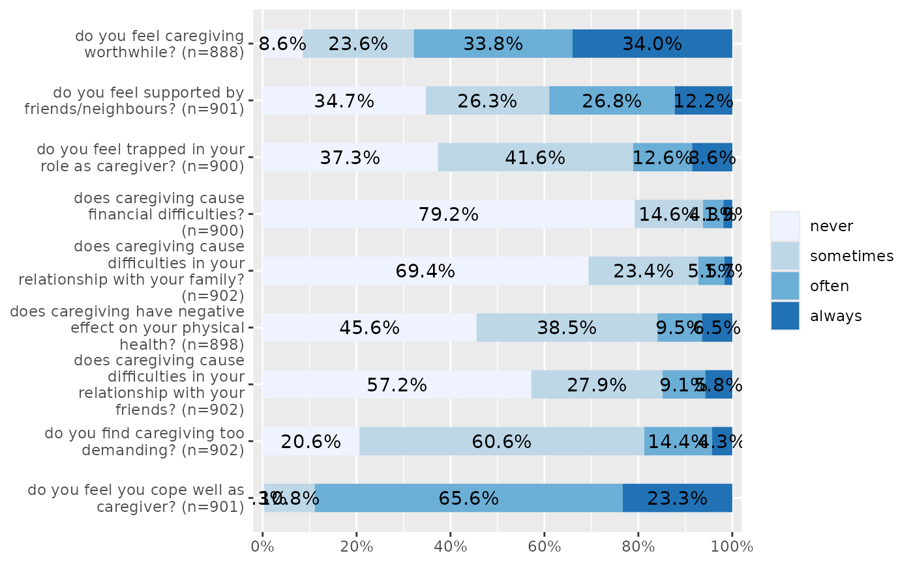
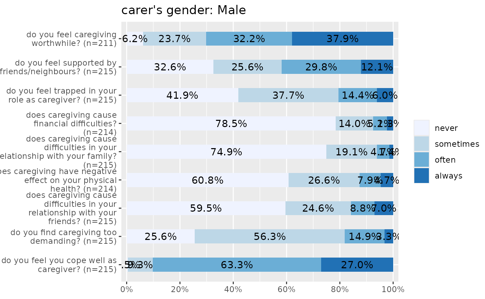
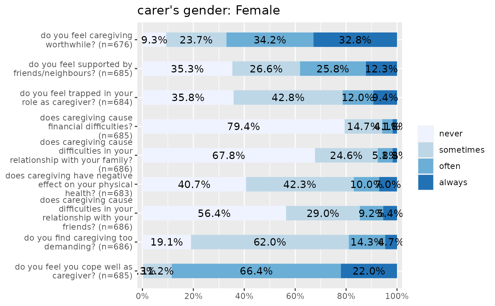

Plot items (variables) of a scale as stacked proportional bars. This function is useful when several items with identical scale/categoroies should be plotted to compare the distribution of answers.
Usage
plot_stackfrq(
items,
title = NULL,
legend.title = NULL,
legend.labels = NULL,
axis.titles = NULL,
axis.labels = NULL,
weight.by = NULL,
sort.frq = NULL,
wrap.title = 50,
wrap.labels = 30,
wrap.legend.title = 30,
wrap.legend.labels = 28,
geom.size = 0.5,
geom.colors = "Blues",
show.prc = TRUE,
show.n = FALSE,
show.total = TRUE,
show.axis.prc = TRUE,
show.legend = TRUE,
grid.breaks = 0.2,
expand.grid = FALSE,
digits = 1,
vjust = "center",
coord.flip = TRUE
)Arguments
- items
Data frame, or a grouped data frame, with each column representing one item.
- title
character vector, used as plot title. Depending on plot type and function, will be set automatically. If
title = "", no title is printed. For effect-plots, may also be a character vector of length > 1, to define titles for each sub-plot or facet.- legend.title
character vector, used as title for the plot legend.
- legend.labels
character vector with labels for the guide/legend.
- axis.titles
character vector of length one or two, defining the title(s) for the x-axis and y-axis.
- axis.labels
character vector with labels used as axis labels. Optional argument, since in most cases, axis labels are set automatically.
- weight.by
Vector of weights that will be applied to weight all cases. Must be a vector of same length as the input vector. Default is
NULL, so no weights are used.- sort.frq
Indicates whether the
itemsshould be ordered by by highest count of first or last category ofitems."first.asc"to order ascending by lowest count of first category,
"first.desc"to order descending by lowest count of first category,
"last.asc"to order ascending by lowest count of last category,
"last.desc"to order descending by lowest count of last category,
NULL(default) for no sorting.
- wrap.title
numeric, determines how many chars of the plot title are displayed in one line and when a line break is inserted.
- wrap.labels
numeric, determines how many chars of the value, variable or axis labels are displayed in one line and when a line break is inserted.
- wrap.legend.title
numeric, determines how many chars of the legend's title are displayed in one line and when a line break is inserted.
- wrap.legend.labels
numeric, determines how many chars of the legend labels are displayed in one line and when a line break is inserted.
- geom.size
size resp. width of the geoms (bar width, line thickness or point size, depending on plot type and function). Note that bar and bin widths mostly need smaller values than dot sizes.
- geom.colors
user defined color for geoms. See 'Details' in
plot_grpfrq.- show.prc
Logical, whether percentage values should be plotted or not.
- show.n
Logical, whether count values hould be plotted or not.
- show.total
logical, if
TRUE, adds total number of cases for each group or category to the labels.- show.axis.prc
Logical, if
TRUE(default), the percentage values at the x-axis are shown.- show.legend
logical, if
TRUE, and depending on plot type and function, a legend is added to the plot.- grid.breaks
numeric; sets the distance between breaks for the axis, i.e. at every
grid.breaks'th position a major grid is being printed.- expand.grid
logical, if
TRUE, the plot grid is expanded, i.e. there is a small margin between axes and plotting region. Default isFALSE.- digits
Numeric, amount of digits after decimal point when rounding estimates or values.
- vjust
character vector, indicating the vertical position of value labels. Allowed are same values as for
vjustaesthetics fromggplot2: "left", "center", "right", "bottom", "middle", "top" and new options like "inward" and "outward", which align text towards and away from the center of the plot respectively.- coord.flip
logical, if
TRUE, the x and y axis are swapped.
Examples
# Data from the EUROFAMCARE sample dataset
library(sjmisc)
data(efc)
# recveive first item of COPE-index scale
start <- which(colnames(efc) == "c82cop1")
# recveive first item of COPE-index scale
end <- which(colnames(efc) == "c90cop9")
# auto-detection of labels
plot_stackfrq(efc[, start:end])

# works on grouped data frames as well
library(dplyr)
efc %>%
group_by(c161sex) %>%
select(start:end) %>%
plot_stackfrq()
#> Warning: Using an external vector in selections was deprecated in tidyselect 1.1.0.
#> ℹ Please use `all_of()` or `any_of()` instead.
#> # Was:
#> data %>% select(start)
#>
#> # Now:
#> data %>% select(all_of(start))
#>
#> See <https://tidyselect.r-lib.org/reference/faq-external-vector.html>.
#> Warning: Using an external vector in selections was deprecated in tidyselect 1.1.0.
#> ℹ Please use `all_of()` or `any_of()` instead.
#> # Was:
#> data %>% select(end)
#>
#> # Now:
#> data %>% select(all_of(end))
#>
#> See <https://tidyselect.r-lib.org/reference/faq-external-vector.html>.
#> Adding missing grouping variables: `c161sex`
#> [[1]]
#> [[1]][[1]]
#> NULL
#>
#> [[1]][[2]]

#>
#>
#> [[2]]

#>